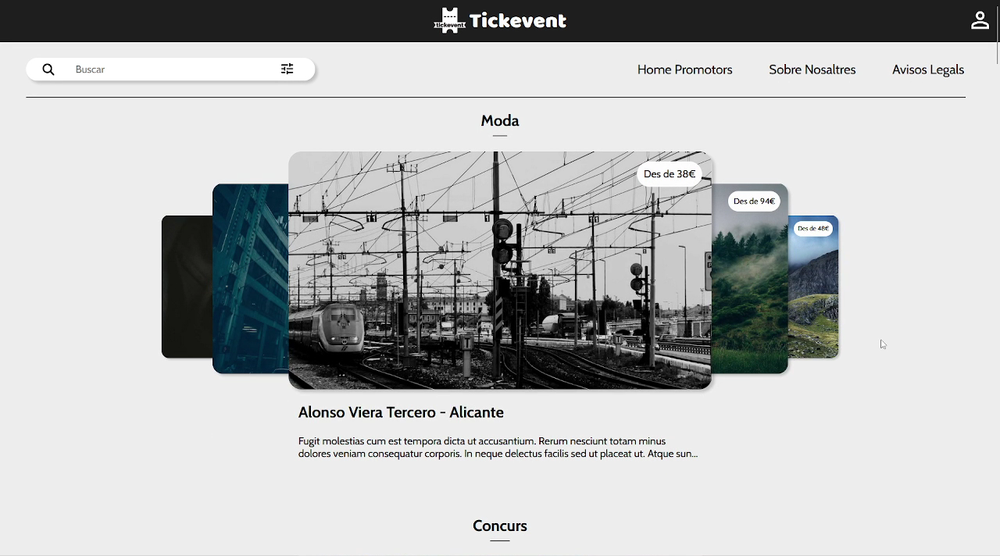

Tickevent - Compra i ven entrades pels teus esdeveniments preferits
Plataforma gratuita per promocionar esdeveniments i comprar entrades per aquests.
Web Developer i FileMaker Developer de Barcelona, Catalunya. Especialitzat en el desenvolupament d'aplicacions web.

Me llamo Miguel Ángel pero mis amigos me llaman midu. Empecé en la programación con un Amstrad, tenía 10 años. Actualmente estoy liderando equipos de desarrollo en multinacionales.
Algunos de mis éxitos incluyen colaborar con Mozilla para el desarrollo de las primeras apps en su sistema FirefoxOS. Aunque hoy está desaparecido fue un gran avance en el mundo del desarrollo web.
Como creador de contenido, cuento con el canal de habla hispana más visto del mundo en la categoría de Software & Game Development en Twitch. Mi objetivo es mejorar la empleabilidad de la comunidad hispana y el acceso a contenido de calidad.